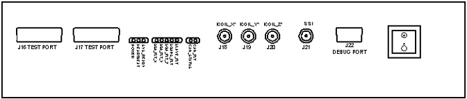
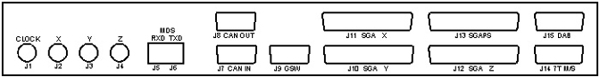

Proprietary to General Electric Company
Direction 5440000, Rev# 5
Signa HDxt Service Methods
Module Version 1.0, Version Date 4/25/07
Proprietary to General Electric Company |
| Last Revised: | October 17, 2006 |
The Gradient Processor 3 (GP3) module is an intelligent interface between the EXCITE Systems Cabinet, and the High Fidelity Driver (HFD) .
All HFD hardware shall be controlled from the GP3. The Systems Cabinet (or suitable test equipment) is required to command the system to ready and report errors. Handshaking between power electronics modules will be done in hardware on the GP3 to ensure that all power hardware is disabled if a fault occurs. The GP3 will provide an analog drive signal for the High Fidelity Amplifiers (HFA) s. The GP3 also samples various analog signals on the power electronics modules, and presents them to the system for fault detection and analysis.
Gradient amplifier data is transmitted from the STIF board to the GP3 over 4 high-speed fiber optic cables. Three of these cables carry 21 bit serial data (X, Y, and Z), the fourth carries a gated 10 MHz clock (CLK). New gradient data is shifted out once every 4 µsec. For each data burst, the GP shall capture the serial data stream and check for framing errors. That data will then be shifted out to the GP DACs on the next 21 bit data burst. In parallel with the gradient data updates, the GP processor shall monitor the status of the HFAs and respond appropriately.
Fault conditions shall be handled locally or communicated to SCP via the CAN bus.
Media File 1: Gradient Processor 3 (GP3)

For Dual Gradient Cabinet configurations, two GP3s can interact using a master/slave architecture, controlling two gradient cabinets synchronously. A single switch or jumper shall be present to configure the GP3 as either the master or slave. For single-cabinet configurations, the jumper shall be set to Master. Error codes were written to address this configuration in the field; hence the error codes read master and slave gradients. If the configuration is a single gradient cabinet, the error code will read master gradient error but it is the only gradient error.
The GP3 chassis encloses the GP3 circuit board assembly and the GP3 power supply. It resides in the HFD cabinet. The GP3 circuit board requires minimal cooling and airflow (10CFM).
The front panel of the GP3 chassis shall accommodate the connectors listed in Table 1 below, a power switch for the GP3 circuit board, and all LED’s indicated in section 4.3.2.3. See Illustration 1 for front panel view.
Table 1: GP Chassis Connectors on the Front Panel
| Connector | NAME | DESCRIPTION |
| J16 | TEST PORT 1 | Connector for 3rd party diagnostics |
| J17 | TEST PORT 2 | Connector for 3rd part diagnostics |
| J18 | ICOIL_X | X Current Monitor BNC Connector |
| J19 | ICOIL_Y | Y Current Monitor BNC Connector |
| J20 | ICOIL_Z | Z Current Monitor BNC Connector |
| J21 | SSI | Start-of-Sequence Trigger BNC Connector |
| J22 | DEBUG PORT | Connector for debug terminal use |
Illustration 1: CHASSIS FRONT PANEL VIEW

The rear panel of the GP chassis shall accommodate the connectors listed in the table below. See Illustration 2 for rear panel view.
Table 2: GP Chassis Connectors on the Rear Panel
| Connector | NAME | # PIN | DESCRIPTION |
| J1 | CLOCK | 1 | 10 MHz Clock Fiber Optic Connector |
| J2 | X | 1 | X Gradient Waveform Data Fiber Optic Connector |
| J3 | Y | 1 | Y Gradient Waveform Data Fiber Optic Connector |
| J4 | Z | 1 | Z Gradient Data Waveform Fiber Optic Connector |
| J5 | RXD | 1 | MDS Receive Connector |
| J6 | TXD | 1 | MDS Transmit Connector |
| J7 | CAN IN | 9 | CAN Input Connector (Toward the Node Supply Power) |
| J8 | CAN OUT | 9 | CAN Output Connector (Away from the Node Supplying Power) |
| J9 | GSW | 9 | Gradient Switch Connector |
| J10 | SGA Y | 37 | X SGA Module Connector |
| J11 | SGA X | 27 | Y SGA Module Connector |
| J12 | SGA Z | 27 | Z SGA Module Connector |
| J13 | SGAPS | 27 | SGA Power Supply Module Connector |
| J14 | 7T M/S | 15 | 7T Master/Slave |
| J15 | DAB | 15 | DAB Connector for 3T Spiral Signa from System Cabinet |
Illustration 2: CHASSIS REAR PANEL VIEW

The GP3 circuit board is 10 layers and 12” x 16”. Signal layers are impedance-controlled. Surface mount technology is used primarily. Thru-hole devices are used where no suitable surface mount device is available. Assembly is double-sided.
The GP PWB layout shall receive special attention in the area of analog circuit power and ground, to prevent axis-axis and digital-analog coupling.
Table 3: Circuit Board LEDs
| LED | NAME | COLOR | DESCRIPTION |
| DS1 | POWER | Green | Indicates +5V is present on GP3 |
| DS2 | HEARTBEAT | Green | Flashing LED indicates DSP1 operation. Flash sequence indicates which test failed when power-up tests fail. (see SDD for details). |
| DS3 | SYS_READY | Green | Indicates that entire gradient subsystem is ready to operate. |
| DS4 | SGA_FLT_X | Yellow | On indicates fault on X-SGA module. |
| DS5 | SGA_FLT_Y | Yellow | On indicates fault on Y-SGA module. |
| DS6 | SGA_FLT_Z | Yellow | On indicates fault on Z-SGA module. |
| DS7 | SGAPS_FLT | Yellow | On indicates fault on SGAPS module. |
| DS8 | SLAVE_FLT | Yellow | On indicates fault on Slave HFD (HFD-Dual only) |
| DS9 | CAN_STATUS | Green | Flashes status message (with 1 second dead time before repetition:0 - Abnormal State - DSP1 is inoperable 1 - Pre-operational state 3 - Stopped State Boot State |
| DS10 | CAN_FLT | Yellow | Flashes status message (with 1 second dead time before repetition:0 - No Error 1 - CAN Bus Off 2 - CAN Warning 3 - CAN Receive Message Lost 4 - Node Guard time out 5 - No CAN Power 6 - Self Test Error |
J1 - CLOCK(HP HFBR-2416 connector on circuit board)
J2 - X (HP HFBR-2416 connector on circuit board)
J3 - Y (HP HFBR-2416 connector on circuit board)
J4 - Z (HP HFBR-2416 connector on circuit board)
Table 4: HSSD Fiber Optic Inputs
| Connector # | SIGNAL NAME | DIRECTION | SIGNAL TYPE |
| J1 | HSSD_IN_CLK | INPUT | 820 nm Optical |
| J2 | HSSD_IN_X | INPUT | 820 nm Optical |
| J3 | HSSD_IN_Y | INPUT | 820 nm Optical |
| J4 | HSSD_IN_Z | INPUT | 820 nm Optical |
J5 - Unused
J6 - Unused
Table 5: MDS Fiber Optic Connectors
| Connector # | SIGNAL NAME | DIRECTION | SIGNAL TYPE |
| J5 | MDS_RXD | INPUT | 660 nm Optical |
| J6 | MDS_TXD | OUTPUT | 660 nm Optical |
J7 - IN (9 position male sub-D connector)
J8 - OUT (9 position female sub-D Connector)
Table 6: CAN Interface Connectors
| PIN # | Signa Name | Direction | Signal Type |
| 1,4,8 | Reserved | - | - |
| 2 | CAN_L | BIPOLAR | DIFFERENTIAL |
| 3,6 | CAN_GND | INPUT | [PWER |
| 5 | CAN_SHLD | INPUT/OUTPUT | GROUND |
| 7 | CAN_H | BIPOLAR | DIFFERENTIAL |
| 9 | CAN_V+ | INPUT | POWER |
J9 - GSW (9 position male sub-D Connector)
Table 7: Gradient Switch Connector
| PIN # | Signa Name | Direction | Signal Type |
| 2 | GSW_TXD | OUTPUT | RS-232 |
| 3 | GSW_RXD | INPUT | RS-232 |
| 1,4,5,6,7,8,9 | GND | OUTPUT | GROUND |
J11 - SGA X (37 position female sub-D connector)
J10 - SGA Y (37 position female sub-D connector)
J11 - SGA Z (37 position female sub-D connector)
Table 8: SGA Interface
| PIN # | SIGNAL NAME | DIRECTION | SIGNAL TYPE |
| 1/20 | SGA_INTERLOCK_IN/no connect | Short to pin 19 @ SGA | |
| 2/21 | SGA_GENABLE+/- | OUTPUT | RS-422 |
| 3/22 | SGA_RDY+/- | INPUT | RS-422 |
| 4/23 | SGA_OT+/- | INPUT | RS-422 |
| 5/24 | SGA_WF_PSUV+/- | INPUT | RS-422 |
| 6/25 | SGA_OC+/- | INPUT | RS-422 |
| 7/26 | SGA_OV+/- | INPUT | RS-422 |
| 8/27 | SGA_UV+/- | INPUT | RS-422 |
| 9/28 | SGA_RESET+/- | OUTPUT | RS-422 |
| 10/29 | SGA_POWER+/- | INPUT | 10mA |
| 11/30 | SGA_VBUS_I_HI+/- | ANALOG INPUT | Bal. DIFFERENTIAL |
| 12/31 | SGA_HST+/- | ANALOG INPUT | Bal. DIFFERENTIAL |
| 13/32 | TRI_0+/- | ANALOG OUTPUT | Bal. DIFFERENTIAL |
| 14/33 | LDIDT+/- | ANALOG OUTPUT | Bal. DIFFERENTIAL |
| 15/34 | TRI_90+/- | ANALOG OUTPUT | Bal. DIFFERENTIAL |
| 16/35 | ICOIL+/- | ANALOG INPUT | Bal. DIFFERENTIAL |
| 17/36 | VDRIVE+/- | ANALOG OUTPUT | Bal. DIFFERENTIAL |
| 18/37VFILT+/- | ONE_ZONE+/- | OUTPUT | RS-422 |
| 19 | SGA_INTERLOCK_OUT | short to pin 1 @ SGA, or with 10KΩ resistor @ HFA |
J13 - SGAPS (37 position male sub-D connector)
Table 9: SGAPS Interface
| PIN # | SIGNAL NAME | DIRECTION | SIGNAL TYPE |
| 1/20 | SGAPS_INTERLOCK_IN/no connect | Short to pin 19 @ SGAPS | |
| 2/21 | SGAPS_OC+/- | INPUT | RS-422 |
| 3/22 | SGAPS_RDY+/- | INPUT | RS-422 |
| 4/23 | SGAPS_OV+/- | INPUT | RS-422 |
| 5/24 | SGAPS_OT+/- | INPUT | RS-422 |
| 6/25 | SGAPS_WF_PSUV+/- | INPUT | RS-422 |
| 7/26 | SGAPS_UV+/- | INPUT | RS-422 |
| 8/27 | SR+/- | OUTPUT | RS-422 |
| 9/28 | SGAPS_GENABLE+/- | OUTPUT | RS-422 |
| 10/29 | SGAPS_POWER+/- | INPUT | 10mA |
| 11/30 | IP_ABS+/- | ANALOG INPUT | Bal. DIFFERENTIAL |
| 12/31 | SGAPS_HST+/- | ANALOG INPUT | Bal. DIFFERENTIAL |
| 13/37 | LGND | INPUT | |
| 14/32 | SGAPS_VBUS+/- | ANALOG INPUT | Bal. DIFFERENTIAL |
| 15/33 | VLOAD+/- | ANALOG INPUT | Bal. DIFFERENTIAL |
| 16/34 | VCONT+/- | ANALOG INPUT | Bal. DIFFERENTIAL |
| 17/35 | RAD_FDBK+/- | ANALOG INPUT | Bal. DIFFERENTIAL |
| 18/36 | SGAPS_RESET+/- | OUTPUT | RS-422 |
| 19 | SGAPS_INTERLOCK_OUT | Short to pin 1 @ SGAPS |